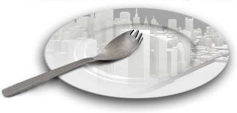

Welcome to our Town & Table
The Sporktown Scoop
Many people can’t believe there is a town named after a tool that is combination spoon and fork. The truth is the town is named after its founder James T. Spork. He founded the town using the wealth from his invention of the plastic Spork. Few people know it was actually his own last name that inspired the idea of the famous spoon fork combination!
Upcoming Events
- Chamber of Commerce Meeting: December 5th
- Board of Finance Annual Meeting: December 10th
- Public Works Commentary: December 15th
- Public Transportation Policy Meeting: December 17th